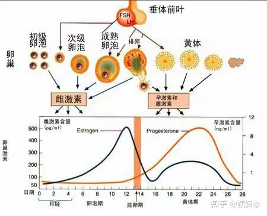

🍀🍥竹蜻蜓🍥🍀（诚聘对象版）
@zqtlovekris99
@kiki520_eth 这图挺好的但是说的就跟有性欲就等于想做爱一样，有超过半数的指派女性都是没有阴道高潮的，他们有性欲也是自己解决也不会想跟你们男的做爱

庞教主
@kiki520_eth
这张图大家务必保存，关于月经周期与欲望的关系图，女人也好色，只是更为隐蔽
一般女生都是这个时间趋势，但也有个例，基本就这个范围，女孩一个月总几天想那个
所以要搞清女孩的姨妈时间 https://t.co/YvAD5fE5EK